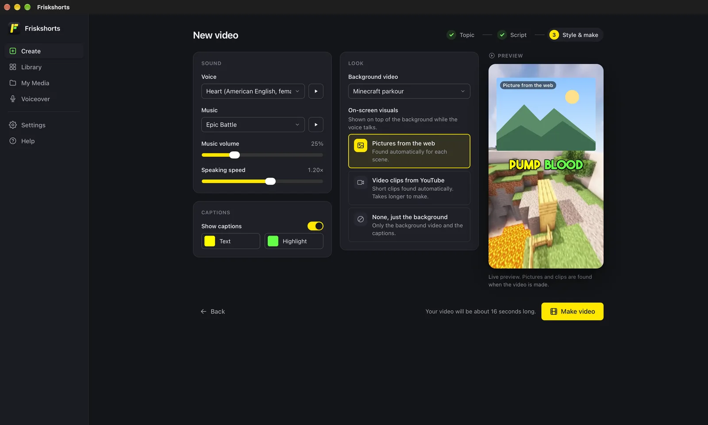
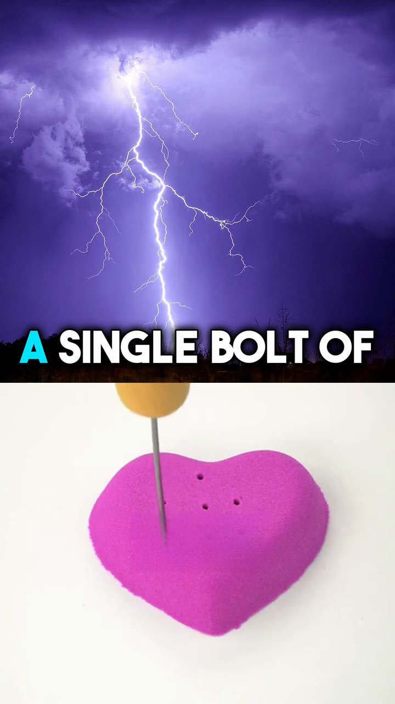
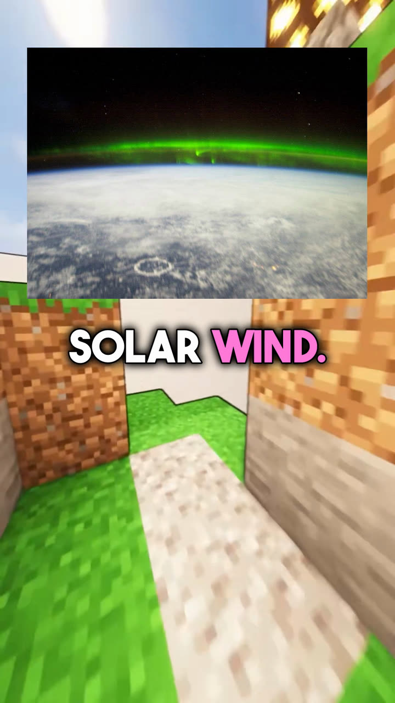
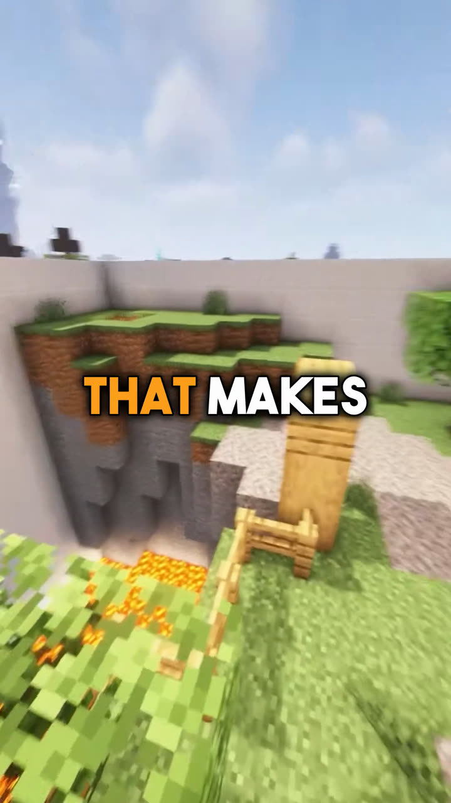
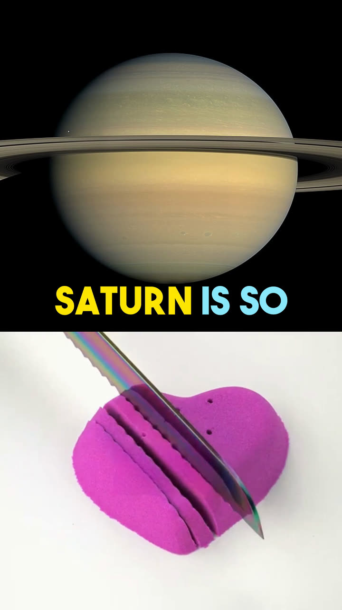

It started as a notebook.
Friskshorts began years ago as a pile of Jupyter notebooks, back when AI could barely write a script and every video took an evening of fixing by hand. Version 2 is the same idea, finally simple enough for anyone to use.
Friskshorts writes the script, reads it aloud, puts it over gameplay and adds the captions. You get a vertical video ready for YouTube, made on your own computer.
Free. For Macs with Apple Silicon. 486 MB.
Next: open it and follow the two clicks in Install help.
One line is enough. Stuck? Pick one of the ideas.
With your own key for Claude, OpenAI, Gemini, DeepSeek or OpenRouter. No key? Copy the prompt into any chatbot and paste the reply back.
More than 40 natural voices, made on your computer. Want it in your own voice? Add voice cloning in Settings.
Voice: Heart, American English
Minecraft parkour, ASMR or your own video in the background. Pictures from the web or YouTube clips on top, found for each scene.
Bold, word by word, in your colours. The word being spoken lights up.
1080 × 1920, ready to upload. Next to it, a text file with the title, description and tags.
Three steps: topic, script, style. Then press Make video and it’s saved on your computer, with a text file ready to paste into YouTube. The same app runs on Mac and Windows.

Straight out of the app, not edited afterwards.

Lightning is hotter than the Sun

Where the northern lights come from

Sharks are older than trees

Saturn could float in water
Voice, captions and rendering work offline. Internet is only needed for AI scripts and web pictures or clips.
Friskshorts began years ago as a pile of Jupyter notebooks, back when AI could barely write a script and every video took an evening of fixing by hand. Version 2 is the same idea, finally simple enough for anyone to use.
Version 2.1.1 for Macs with Apple Silicon (M1 or newer). 486 MB.
Next: open it and follow the two clicks in Install help.
Windows 10 or 11, 64-bit.
Download for Windows 480 MB.
The app isn’t code-signed yet, so the first time you open it you need to allow it once. See the two clicks
About 1 GB of free space. Voice, captions and rendering work offline.
Want the narration in your own voice? Turn on voice cloning in Settings and the app installs it for you (about 1.4 GB).
Friskshorts is free. If it saves you time, you can support it.
Friskshorts is free. If it saves you time, a star on GitHub helps.
Support on GitHub Sponsors Star on GitHub